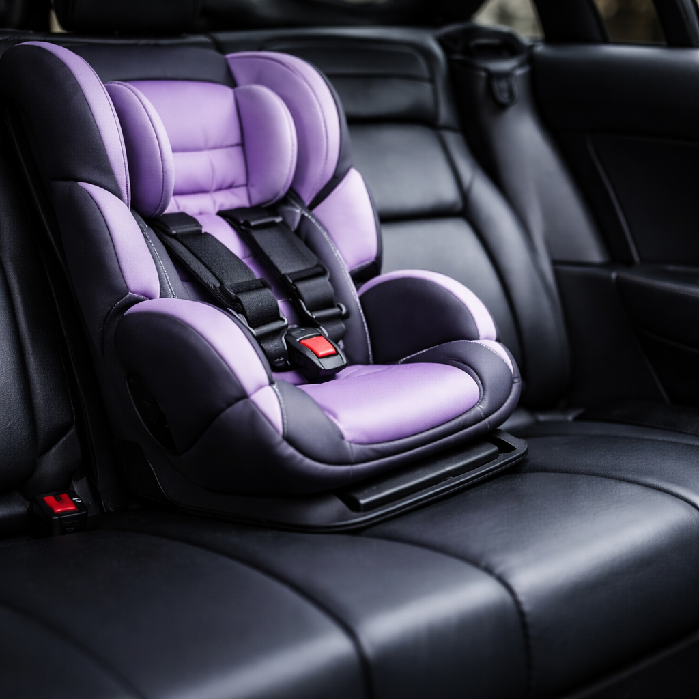
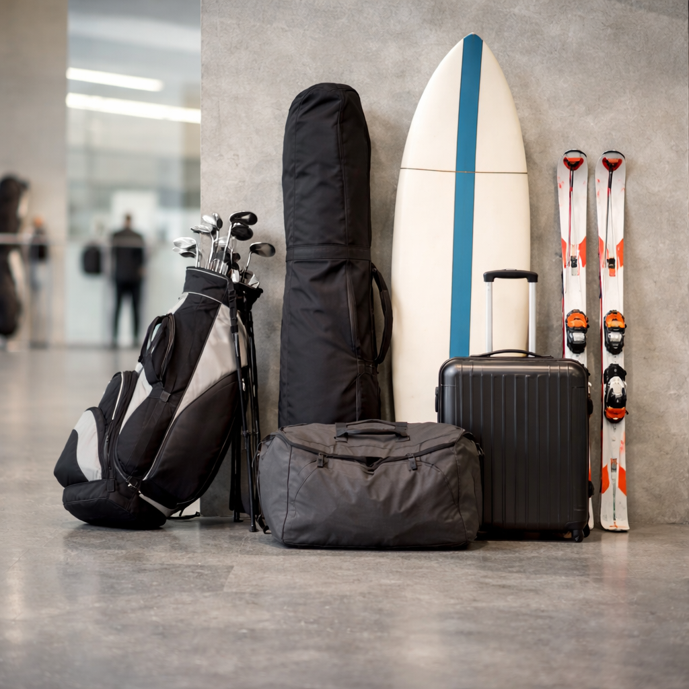

Private transfers between Narita Airport and Tokyo, Disney Resort, Yokohama, Hakone and other popular destinations.
Reliable airport pickup designed for international arrivals with luggage and long travel distances.
We track your flight arriving in Japan so pickup timing can be adjusted if your arrival is delayed.
Optional name-sign pickup makes it easier to meet your driver at the arrival hall.
Select the right vehicle for your group size and luggage requirements.
Choose one of the most common destinations travellers book after arriving in Narita.
Direct private transfer to hotels, apartments, and stations across Tokyo.
Convenient transfer to Tokyo Disneyland and DisneySea hotels.
Comfortable ride for travellers heading to Yokohama city and port area.
Direct long-distance transfer ideal for luggage-heavy travellers.
Select your route and vehicle to continue booking.
Additional services can be selected during booking.

Infant, child, and booster seats can be arranged for families travelling with young children.
Your driver can wait at the arrival hall holding a name sign for easier pickup.
Additional waiting time can be arranged depending on the transfer type.

Large sports equipment such as surfboards, skis, and golf bags may require larger vehicles.
We track your flight arriving in Japan so pickup timing can be adjusted accordingly.
Yes. Both airport pickup and airport drop-off routes are available.
Yes, but please select the appropriate vehicle for oversized luggage.